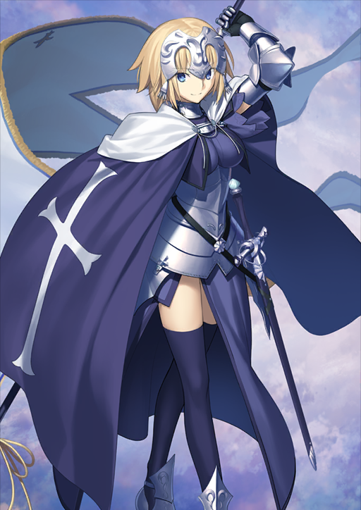

The stargazer looks to other worlds,
The ability to see beyond the stars,
So much is it a gift as it is a curse,
For they see the worlds over yonder.
Worlds not their own, different yet beautiful,
But because it is beautiful, he realizes,
So distant yet so close,
Not space but receives feelings.
Feelings of anger towards innocent people.
People that don't know them nor do they know.
One so connected but so disjointed.
One day, they should realize;
One day, this world which he voyages on,
Will shatter to pieces like a fallen glass.
And only then he sees it's beauty;
Which can no longer be seen through the broken.
This is a link to poem 2
This is a link to poem 3

| FGO stats | ||||
|---|---|---|---|---|
| Class | Servant | Level | Attack | HP |
| Avenger | Jeanne d'Arc (Alter) | 100 | 16,278 | 14,665 |
| Saber | Okita Souji | 102 | 14,435 | 15,737 |
| Saber | Senji Muramasa | 98 | 13,228 | 15,804 |
Story Characters (concept)